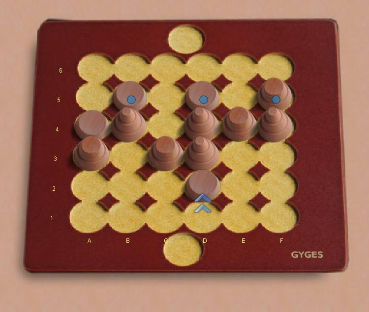

Gyges
Gyges это гоночная игра с необычными правилами.
Базовый принцип прост - вы можете двигать только фишки
из самого ближнего к вам ряда. Фишки ходят на 1, 2
или 3 клетки в любом направлении, но если ход
заканчивается на занятом поле, фишка либо "отскакивает"
от стоящей либо замещает её. Чтобы выиграть вам нужно
провести любую фишку за противоположный край доски. Игры
зачастую проходят очень быстро.
Правила:
- Игроки ходят по очереди. На первом ходе каждый игрок
расставляет фишки (по две каждого вида)
на ближайшей к нему линии.
- После игроки двигают фишки из ближайшего непустого
ряда. В редком случае, если ни одна фишка из ближайшего
ряда не может ходить, берут фишки из следующего ряда.
- Фишки ходят в соответствии с их высотой на 1, 2 или 3
клетки в любом направлении по вертикали и горизонтали.
Направление хода можно свободно менять, однако нельзя дважды
передвигаться с одной клетки на другую за ход.
- На пустой клетке ход заканчивается.
- Если ход заканчивается на занятой клетке, то нужно
продолжить движение на количество шагов равное высоте
фишки на клетке,
- либо (в усложнённой версии игры)
оставить свою фишку на клетке, а стоявшую там фишку
поместить на любое место на доске, но не далее,
чем ближайший к вашему противнику непустой ряд.
- Побеждает игрок, провёдший фишку за
противоположный край доски. Обычно это происходит с
несколькими отскоками.
Боты: Они кажутся
довольно сильными, просто потому что предугадывание очень
непривычно для людей.
|

|